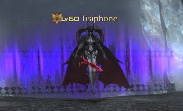

Floor 150 (Boss)
Palace of the Dead • Floors 141–150
Boss: Tisiphone

| Ability | Potency | Effect |
|---|---|---|
| Dark Mist |
|
telegraphed pointblank AoE; inflicts terror (10s) |
| Void Fire IV |
|
large telegraphed circle AoE on random player |
| Void Aero |
|
telegraphed wide line AoE |
| Summon Darkness | n/a | summons one of four types of adds (see rotation) |
| Fatal Allure | n/a | draws succubus add to boss and inflicts terror on it |
| Blood Sword | n/a | kills succubus add, absorbing its remaining HP |
| Blood Rain |
|
roomwide AoE; also hits zombie adds. Never crits |
| Sweet Steel (succubus add) |
|
instant |
| Void Fire II (succubus add) |
|
telegraphed circle AoE |
Notes:
-
Rotation:
- Void Fire IV
- Summon Darkness (Gargoyle): calls an untargetable gargoyle that will use a large telegraphed line AoE at the same time as Dark Mist
- Dark Mist
- Summon Darkness (Zombies): calls 4 zombie adds that will slowly crawl towards you. If one touches you, you will be bound until it dies
- Void Fire IV
- Void Aero
- Summon Darkness (Vodoriga): calls an untargetable vodoriga that will use a telegraphed circle AoE just after the next Void Fire IV
- Void Fire IV
- Dark Mist
- Summon Darkness (Succubus): calls a succubus add - in addition to autoattacks, uses Sweet Steel and Void Fire II
- Void Aero
- Void Fire IV
- Fatal Allure
- Blood Sword - the HP drain is 1:1, so whether you DPS the add or the boss doesn't matter in terms of damage
- Blood Rain - kills any remaining zombies
- Entire rotation is about 1m50s
- Don't let the zombies catch you
- Physical ranged jobs can just kite the zombies until they despawn. It's likely better for others to kill them. They have pretty low HP
- If you're not killing the succubus add, it's worth putting DoTs on it anyway
- In party play, Summon Darkness (Gargoyle/Vodoriga) summons one add for each party member
Job Notes & Kill Times
BRD
- Kite and ignore the zombie adds
- DoTs on the succubus add will do about the same damage as two regular GCDs on boss, so doesn't make much difference
Kill times:
- ~6m30s with strength (6.55)
GNB
- Strength highly recommended
- Gather zombie adds in the middle and AoE them down. You can get hit by the Void Fire IV AoE from boss - its damage is pretty low. You'll want to get out of the second AoE that comes in right after though
Kill times:
- 6m45s with strength, 1 lust, and steel at least until lust is done. Lust used when first set of zombies is gathered in middle, and spammed for the full duration to take out the zombies, damage the boss, and also damage the succubus a lot (6.15)
MCH
- More comfortable with steel, but not necessary
- Blood Rain hurts without steel, so make sure to keep your HP topped
- Kite and ignore all adds; focus down the boss
Kill times:
- 6m30s with no offensive pomanders (6.45)
- 4m45s with strength (6.45)
PCT
Kill times:
- 4m with strength and 1 lust at start (7.16)
PLD
- Steel recommended
- Gather zombie adds in the middle and AoE them down. Probably want to save Fight or Flight and Circle of Scorn for this. You can get hit by the Void Fire IV AoE from boss - its damage is pretty low. You'll want to get out of the second AoE that comes in right after though. Maybe use Hallowed Ground if you're not going to make it out, but it is possible to kill the adds fast enough even without strength
- Put DoTs on the succubus add, but focus the boss
Kill times:
- 10m15s with 7m30s strength and 1 lust used to AoE first adds (6.0)
- 9m with 1 full strength and 1 lust used to AoE first adds (6.0)
RPR
Kill times:
- 4m45s with strength (6.0)
- 5m20s with steel, no strength and 1 lust - killed before the 3rd Succubus is consumed (7.21)
SGE
- Kite and ignore zombies. Save your Phlegma casts for AoEing Tisiphone and the succubus add, but be careful of the add's damage if you don't have steel up
- Should deal around 14% net damage per cycle without strength
Kill times:
- 12m45s with no offensive pomanders (6.28)
- 9m with strength (6.28)
- 8m with strength and 1 lust (6.0)
SMN
Kill times:
- 4m15s with strength and 1 lust (6.0)
WAR
- Not bad without steel; just keep your HP up for Blood Rain
- Gather zombie adds in the middle and AoE them down. You can get hit by the Void Fire IV AoE from boss - its damage is pretty low. You'll want to get out of the second AoE that comes in right after though
- If not using strength, save Berserk or gauge for zombies
Kill times:
- 16-17m with no offensive pomanders (6.2)
- 8m30s with 1 strength, 1 lust, and steel at least until lust is done. Lust used when first set of zombies is gathered in middle, and spammed for almost the full duration to take out the zombies, damage the boss, and also damage the succubus a lot. Dropped when HP got low. Steel helps stay in lust longer. This is a conservative timing - it is possible to kill her just before the 4th Fatal Allure, taking only 7m15s (6.10)
WHM
- With strength, a single Assize will kill all the zombies. Otherwise kite them around until the succubus add spawns, then use the next Assize (will come up a few seconds later) to clear them and also get AoE on the succubus
- 2-target Holy is a 60 potency win over Stone III, so good Holy AoE on the boss and succubus add can give around 2 Stone GCDs worth of damage. But BE CAREFUL if no steel - a triple crit (2 auto-attacks + Sweet Steel) can kill from full health
- Also be careful of Blood Rain without steel, since your HP will probably be low from succubus add damage. 7000 HP is enough to be safe
- Should deal 14-15% net damage per cycle without strength
Kill times:
- 12m15s with no offensive pomanders (7.16)